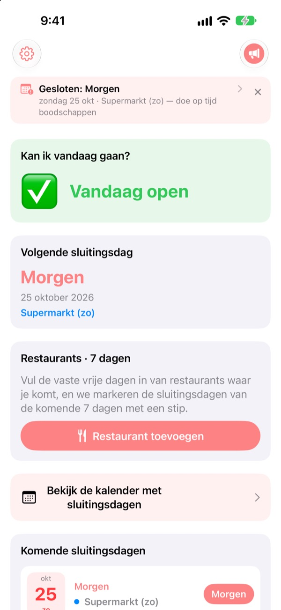
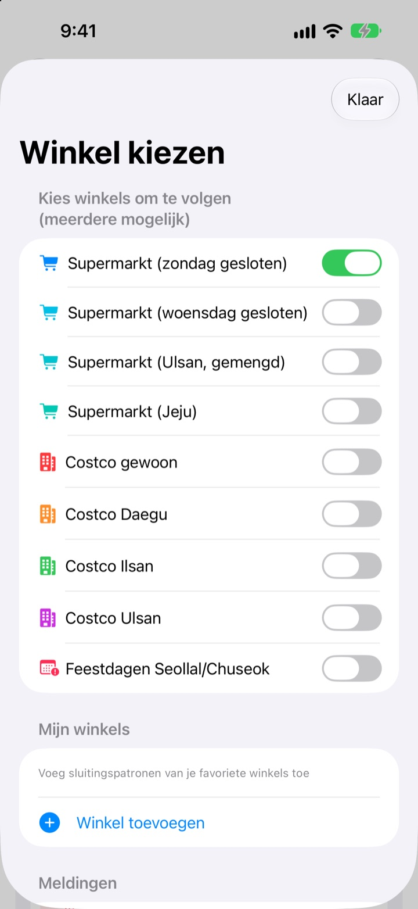
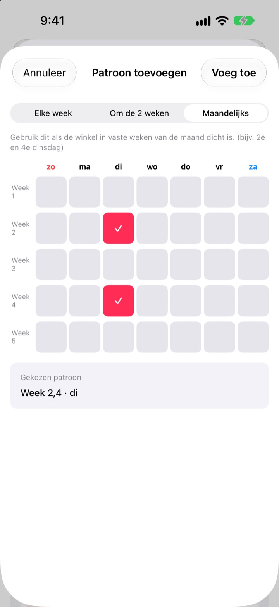
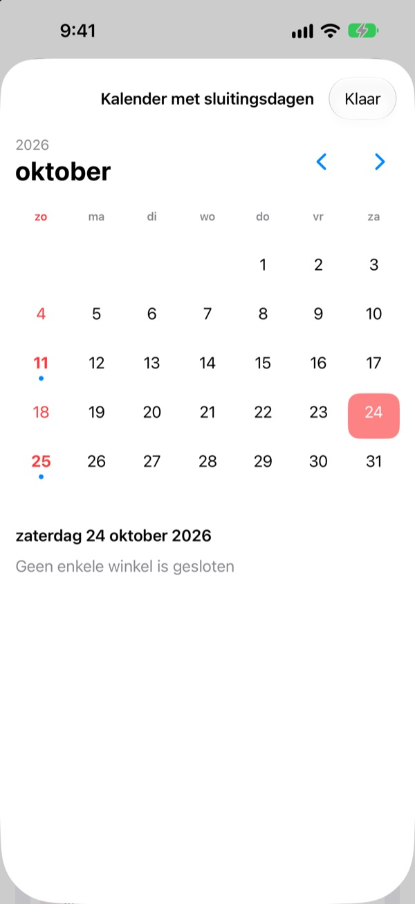
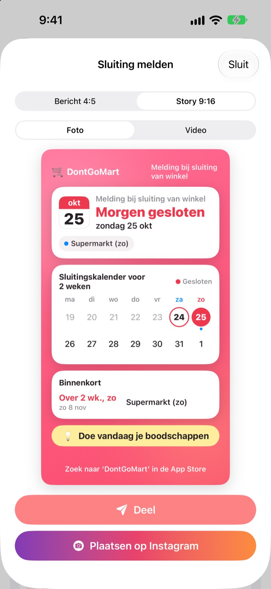

Voor je boodschappen gaat doen:
is de winkel vandaag open?
Als je de app opent, zie je als eerste of je winkels vandaag open zijn. Vóór elke sluitingsdag krijg je een herinnering, zodat je nooit meer voor een dichte deur staat.
Alle functies zijn gratis. Geen account, geen advertenties.

Probeer het met jouw winkel
Kies een winkel en zie meteen of hij vandaag open is en wanneer hij weer dichtgaat. Berekend met dezelfde regels als de app.
Ooit met je boodschappenlijst voor een gesloten winkel gestaan?
Grote supermarkten in Korea moeten twee dagen per maand dicht, maar welke hangt af van de plek. Meestal de tweede en vierde zondag, elders woensdag, en Ulsan en Jeju hebben eigen regels. Bij Costco hangt het af van de vestiging. DontGoMart rekent de sluitingsdagen uit volgens de regels van jouw winkels en vertelt je eerst of je vandaag kunt gaan.
Klopt in elke regio
Kies winkels die op zondag of woensdag sluiten, of regio’s met een eigen schema zoals Ulsan en Jeju. Gewone Costco-vestigingen en die in Daegu, Ilsan en Ulsan stel je apart in.
Ook sluiting op de dag van Seollal en Chuseok staat erbij, en je kunt meerdere winkels tegelijk volgen.

Je buurtwinkel en je vaste restaurants
Staat een winkel er niet bij, voeg hem dan zelf toe: elke week, om de week of in welke weken van de maand en op welke dag hij dicht is.
Voor een restaurant plak je een link die je vanuit Naver Map deelt of kies je een screenshot van de infopagina, en de vaste rustdagen worden vanzelf ingevuld. Tekst op foto’s wordt alleen op je apparaat gelezen.

Herinneringen en widgets zodat je het niet vergeet
Krijg een melding 1, 2, 3 of 7 dagen van tevoren op het tijdstip dat jij kiest, en de dag ervoor nog een dat vandaag een goede dag is om boodschappen te doen.
Widgets op het beginscherm en toegangsscherm tonen de volgende sluitingsdag, of het deze zondag open is en de komende zeven dagen van je restaurants. De kalender toont een hele maand.

Deel het met één kaart
Maak van het nieuws een kaart met een kalender van twee weken en een boodschappentip en stuur hem naar de familie-app. Formaten voor Instagram-post en -story, en een korte video.

In drie stappen aan de slag
- 1
Kies je winkels
Zet de winkels en regio’s aan waar je boodschappen doet. Zoveel als je wilt.
- 2
Zet herinneringen aan
Kies hoeveel dagen van tevoren en hoe laat.
- 3
Voeg een widget toe
Kijk op je beginscherm of toegangsscherm zonder de app te openen.
Sluitingsregels per winkel
- Supermarkt (zondag gesloten)
- 2e en 4e zondag · de meeste regio’s
- Supermarkt (woensdag gesloten)
- 2e en 4e woensdag · deel van Gyeonggi, Cheongju
- Supermarkt (Ulsan)
- 2e woensdag, 4e zondag
- Supermarkt (Jeju)
- 2e vrijdag, 4e zaterdag
- Costco gewoon
- 2e en 4e zondag
- Costco Daegu
- 2e en 4e maandag · Daegu, Daegu Innovation
- Costco Ilsan
- 2e en 4e woensdag
- Costco Ulsan
- 2e woensdag, 4e zondag
- Seollal, Chuseok
- gesloten op de dag zelf
Verplichte sluitingsdagen worden door lokale overheden bepaald en kunnen veranderen. Klopt er iets niet, mail ons op het adres hieronder.
Veelgestelde vragen
De sluitingsdagen kloppen niet.
Verplichte sluitingsdagen hangen af van lokale verordeningen en verschillen per regio. Controleer in Instellingen of je het juiste winkeltype hebt gekozen (zondag gesloten, woensdag gesloten, Ulsan, Jeju enz.). Klopt het nog steeds niet, stuur ons de naam van de winkel en de buurt, dan kijken we ernaar.
Mijn winkel staat er niet bij.
Voeg hem toe als eigen winkel. Kies elke week, om de week of in welke weken van de maand en op welke dag hij dicht is, bijvoorbeeld de tweede en vierde zondag.
De rustdagen van een restaurant zijn verkeerd ingevuld.
Bij importeren via een Naver Map-link moet de pagina van het restaurant de vaste rustdagen vermelden. Bij een screenshot moet de tekst over de sluiting zichtbaar zijn. Je kunt alles aanpassen voordat je opslaat.
Ik krijg geen herinneringen.
Controleer of meldingen zijn toegestaan in Instellingen > Berichtgeving > DontGoMart en of de herinneringen in de app aanstaan.
Mijn widget werkt niet bij.
Open de app één keer en de widgets worden ververst. Helpt dat niet, verwijder de widget en voeg hem opnieuw toe.
Wat zijn fooien?
Alle functies van DontGoMart zijn gratis. Koffie, taart en maaltijd zijn fooien voor de ontwikkelaar. Daarna krijg je een bedankje en een badge met hoe vaak je hebt gegeven.
Waar vraag ik naar betalingen of terugbetalingen?
Apple verwerkt aankopen in de app, dus terugbetaling vraag je aan via reportaproblem.apple.com. Voor de rest kun je ons mailen.
Hoe worden mijn gegevens behandeld?
Geen accounts, advertenties of trackingtools, en tekst op screenshots wordt alleen op je apparaat gelezen. Details in het privacybeleid hieronder.
Vragen of ideeën? Mail naar hyunho.lee.1993@gmail.com. We reageren meestal binnen een à twee dagen.